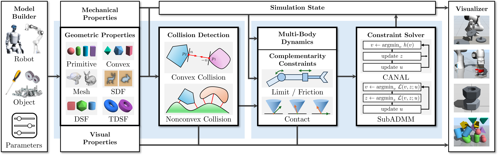
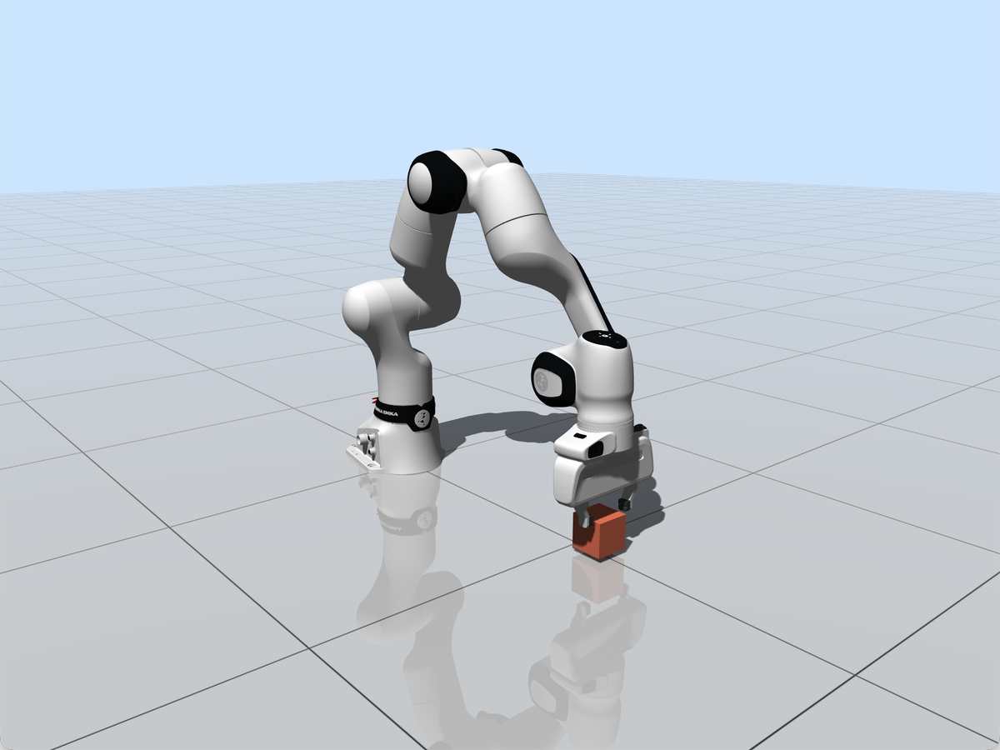

Abstract
CRISP is a high-fidelity physics engine for contact-rich robotic simulation. It combines expressive handling of complex geometry with robust contact solvers to accurately simulate dense, tightly coupled interactions.
With support for meshes, signed distance fields, and differentiable support functions, CRISP captures fine geometric contact across complex shapes. Its augmented Lagrangian solvers resolve multi-contact constraints without relying on problematic contact relaxations, enabling physically consistent simulation of tasks such as tight-tolerance insertion, gear interaction, and bolt-nut assembly.
System Overview
CRISP consists of four main components: model building, collision detection, constraint solving, and visualization. Through the model builder, users define robots, objects, and simulation parameters together with their mechanical, geometric, and visual properties. CRISP supports collision geometries ranging from primitives and convex shapes to meshes, SDFs, DSFs, and TDSFs.

At each simulation step, the collision detection engine extracts penetration depths, contact points, and normals using algorithms tailored to convex and nonconvex geometry pairs. The constraint solver then solves the multibody dynamics subject to contact, joint-limit, and friction constraints using CANAL or SubADMM. The resulting state advances the simulation and is displayed by the built-in visualizer.
Getting Started
Configure the repository with CMake to download the latest CRISP release package for your platform, then build one of the included examples.
git clone https://github.com/INRoL/crisp.git
cd crisp
cmake -S . -B build -DCMAKE_BUILD_TYPE=Release -Dcrisp_use_bundled_eigen=ON
cmake --build build --target 01_franka
./build/examples/01_frankaSimulation Examples
We provide examples spanning articulated systems, dense multi-contact dynamics, geometry-sensitive interactions, and contact-rich robotic manipulation.

BibTeX
@misc{crisp2026,
title = {{CRISP}: Contact-Rich Robotic Simulation Platform with Extensive Geometries and Contact Solvers},
author = {{Interactive \& Networked Robotics Laboratory (INRoL)}},
year = {2026},
url = {https://github.com/INRoL/crisp}
}